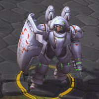
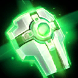
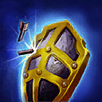
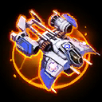
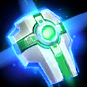
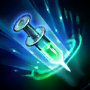

Lt. Morales
Welcome to our Lt. Morales guide for Heroes of the Storm. Here you will learn everything you need to know in order to play Lt. Morales in a competitive environment, whether you play on your own or with a team.
Safe Build
| Level 1 | Level 4 | Level 7 | Level 10 | Level 13 | Level 16 | Level 20 |
|---|---|---|---|---|---|---|
|  |  |  |
The Safe Build provides you with both satisfying healing output and a decent amount of self-protection. We recommend this build if you are not sure how to skill Lt. Morales or if you are a newer (Support) player in general. Talents such as Trauma Trigger Icon Trauma Trigger or Couples Therapy Icon Couples Therapy cause mispositioning or exposing yourself less unforgiving by adding additional survivability to Lt. Morales.
Single Target Protection Build
| Level 1 | Level 4 | Level 7 | Level 10 | Level 13 | Level 16 | Level 20 |
|---|---|---|---|---|---|---|
|  |  |
The Single Target Protection Build focuses entirely on keeping important allies alive and thus sacrifices self-sustain on Lt. Morales herself. Experienced players will have a huge impact on team fights by utilizing talents like Prolonged Safeguard Icon Prolonged Safeguard, Cleanse Icon Cleanse, and Intensive Care Icon Intensive Care to the fullest, without exposing themselves to enemy Warriors and melee Assassins.
Go Back